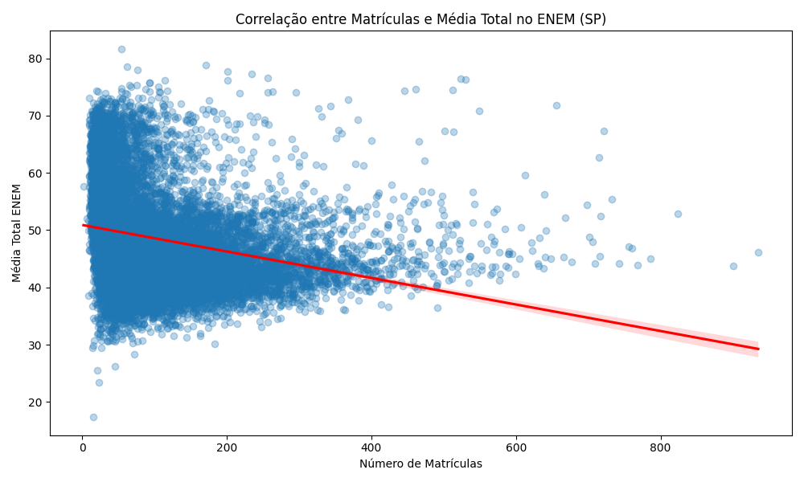
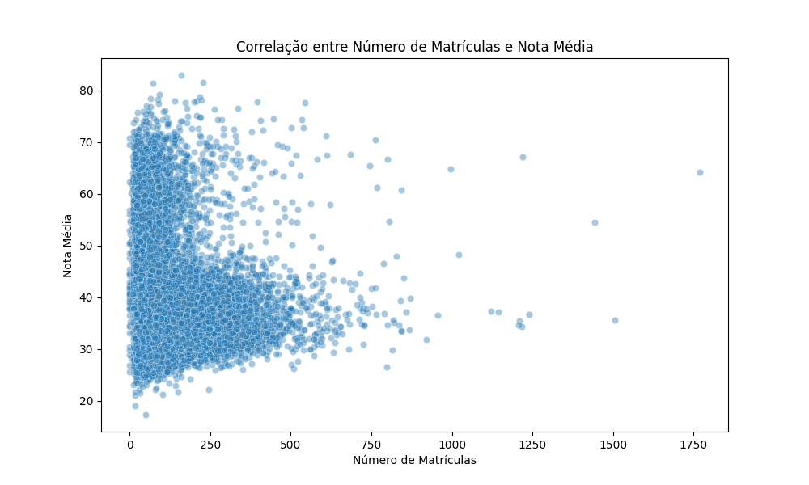
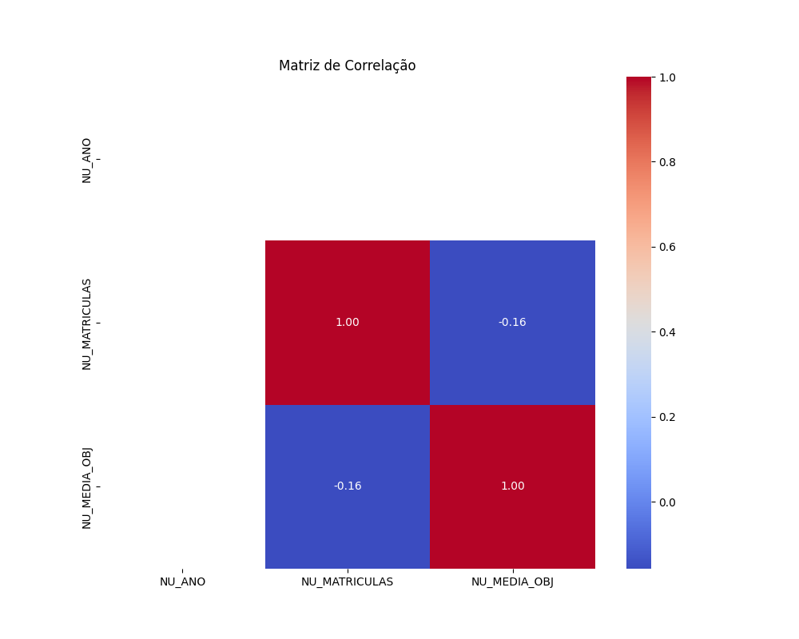
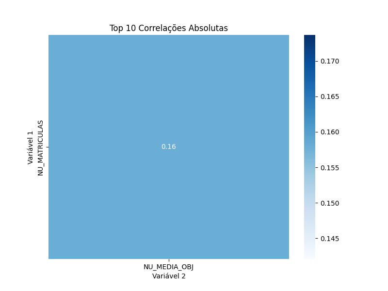

Neste projeto, investiguei se existe correlação entre o número de alunos matriculados em uma escola e o desempenho médio desses alunos no Enem 2015. Os dados utilizados são públicos e se referem às escolas do estado de São Paulo.
Em outras palavras: quis saber se escolas com muitos alunos têm médias melhores ou piores no Enem.
Usei os microdados do Enem por escola e filtrei apenas os registros de São Paulo. Após limpar os dados e remover valores ausentes, apliquei a correlação de Pearson entre as variáveis:
A correlação de Pearson mede a relação linear entre duas variáveis e varia entre -1 e 1.
O resultado mostra uma correlação negativa fraca, mas estatisticamente significativa. Isso sugere que escolas com mais alunos tendem a ter médias ligeiramente menores.
Dispersão com linha de tendência:
Dispersão simples:
Matriz de correlação:
Heatmap com as 10 maiores correlações:
Apesar da correlação não ser forte, os resultados indicam que escolas com muitos alunos podem enfrentar dificuldades adicionais que afetam o desempenho médio. Isso pode estar relacionado à estrutura física, atenção individualizada, ou gestão pedagógica.
Em outras palavras: escolas muito grandes, com muitos alunos, tendem a ter médias um pouco menores no Enem — talvez por dificuldades em manter a qualidade com muitos estudantes.
← Voltar ao início